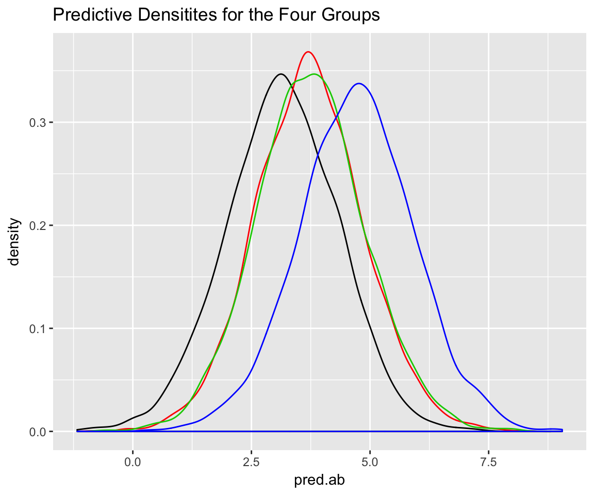

Chapter 2 Prediction
Let’s look at the same problem from a predictive perspective. Suppose we are interested in reproducible results; reproducible in the sense that future observations (or means of samples of observations) are affected by Aa, Bb, or their combination. As before we fit a Bayesian hierarchial model to the frauda

## Compiling the C++ model## Start sampling##
## SAMPLING FOR MODEL 'gaussian(identity) brms-model' NOW (CHAIN 1).
##
## Chain 1, Iteration: 1 / 2000 [ 0%] (Warmup)
## Chain 1, Iteration: 200 / 2000 [ 10%] (Warmup)
## Chain 1, Iteration: 400 / 2000 [ 20%] (Warmup)
## Chain 1, Iteration: 600 / 2000 [ 30%] (Warmup)
## Chain 1, Iteration: 800 / 2000 [ 40%] (Warmup)
## Chain 1, Iteration: 1000 / 2000 [ 50%] (Warmup)
## Chain 1, Iteration: 1001 / 2000 [ 50%] (Sampling)
## Chain 1, Iteration: 1200 / 2000 [ 60%] (Sampling)
## Chain 1, Iteration: 1400 / 2000 [ 70%] (Sampling)
## Chain 1, Iteration: 1600 / 2000 [ 80%] (Sampling)
## Chain 1, Iteration: 1800 / 2000 [ 90%] (Sampling)
## Chain 1, Iteration: 2000 / 2000 [100%] (Sampling)
## Elapsed Time: 0.167906 seconds (Warm-up)
## 0.278635 seconds (Sampling)
## 0.446541 seconds (Total)
##
##
## SAMPLING FOR MODEL 'gaussian(identity) brms-model' NOW (CHAIN 2).
##
## Chain 2, Iteration: 1 / 2000 [ 0%] (Warmup)
## Chain 2, Iteration: 200 / 2000 [ 10%] (Warmup)
## Chain 2, Iteration: 400 / 2000 [ 20%] (Warmup)
## Chain 2, Iteration: 600 / 2000 [ 30%] (Warmup)
## Chain 2, Iteration: 800 / 2000 [ 40%] (Warmup)
## Chain 2, Iteration: 1000 / 2000 [ 50%] (Warmup)
## Chain 2, Iteration: 1001 / 2000 [ 50%] (Sampling)
## Chain 2, Iteration: 1200 / 2000 [ 60%] (Sampling)
## Chain 2, Iteration: 1400 / 2000 [ 70%] (Sampling)
## Chain 2, Iteration: 1600 / 2000 [ 80%] (Sampling)
## Chain 2, Iteration: 1800 / 2000 [ 90%] (Sampling)
## Chain 2, Iteration: 2000 / 2000 [100%] (Sampling)
## Elapsed Time: 0.1738 seconds (Warm-up)
## 0.171809 seconds (Sampling)
## 0.345609 seconds (Total)
##
##
## SAMPLING FOR MODEL 'gaussian(identity) brms-model' NOW (CHAIN 3).
##
## Chain 3, Iteration: 1 / 2000 [ 0%] (Warmup)
## Chain 3, Iteration: 200 / 2000 [ 10%] (Warmup)
## Chain 3, Iteration: 400 / 2000 [ 20%] (Warmup)
## Chain 3, Iteration: 600 / 2000 [ 30%] (Warmup)
## Chain 3, Iteration: 800 / 2000 [ 40%] (Warmup)
## Chain 3, Iteration: 1000 / 2000 [ 50%] (Warmup)
## Chain 3, Iteration: 1001 / 2000 [ 50%] (Sampling)
## Chain 3, Iteration: 1200 / 2000 [ 60%] (Sampling)
## Chain 3, Iteration: 1400 / 2000 [ 70%] (Sampling)
## Chain 3, Iteration: 1600 / 2000 [ 80%] (Sampling)
## Chain 3, Iteration: 1800 / 2000 [ 90%] (Sampling)
## Chain 3, Iteration: 2000 / 2000 [100%] (Sampling)
## Elapsed Time: 0.181219 seconds (Warm-up)
## 0.158085 seconds (Sampling)
## 0.339304 seconds (Total)
##
##
## SAMPLING FOR MODEL 'gaussian(identity) brms-model' NOW (CHAIN 4).
##
## Chain 4, Iteration: 1 / 2000 [ 0%] (Warmup)
## Chain 4, Iteration: 200 / 2000 [ 10%] (Warmup)
## Chain 4, Iteration: 400 / 2000 [ 20%] (Warmup)
## Chain 4, Iteration: 600 / 2000 [ 30%] (Warmup)
## Chain 4, Iteration: 800 / 2000 [ 40%] (Warmup)
## Chain 4, Iteration: 1000 / 2000 [ 50%] (Warmup)
## Chain 4, Iteration: 1001 / 2000 [ 50%] (Sampling)
## Chain 4, Iteration: 1200 / 2000 [ 60%] (Sampling)
## Chain 4, Iteration: 1400 / 2000 [ 70%] (Sampling)
## Chain 4, Iteration: 1600 / 2000 [ 80%] (Sampling)
## Chain 4, Iteration: 1800 / 2000 [ 90%] (Sampling)
## Chain 4, Iteration: 2000 / 2000 [100%] (Sampling)
## Elapsed Time: 0.159684 seconds (Warm-up)
## 0.177277 seconds (Sampling)
## 0.336961 seconds (Total)## Warning: There were 14 divergent transitions after warmup. Increasing adapt_delta above 0.9 may help. See
## http://mc-stan.org/misc/warnings.html#divergent-transitions-after-warmup## Warning: Examine the pairs() plot to diagnose sampling problems## Pr(ab < Ab) Pr(ab < Ab) Pr(ab < AB) Pr(Ab < AB) Pr(aB < AB)
## 0.63700 0.64250 0.81800 0.72125 0.72200## pred.string
## 1324 1234 2134 3124 1243 1342 3214 2314 2143
## 0.12700 0.12625 0.09350 0.07475 0.06575 0.06475 0.06075 0.05700 0.04275
## 3142 1432 1423 3241 2341 2413 3412 4132 4123
## 0.04050 0.03525 0.03300 0.02525 0.02100 0.01900 0.01775 0.01550 0.01475
## 3421 2431 4312 4213 4231 4321
## 0.01400 0.01325 0.01050 0.00950 0.00925 0.00900
2.1 Predicting a future ‘significant’ result
A seemingly reasonable criterion for reproducibility is to compute the predictive probability of a future “significant” result, given the current observed data. I use the scare quotes for “significant” because its not clear to me exactly what this statistical/scientific standard should be. Let’s proceed using the ANOVA structure from chapter 1, and see what happens.
In the following, we sample \(n = 10\) observations from the predictive distributions of the four treatment groups, and repeat the two-factor ANOVA.
## [1] 0.56625 0.59200 0.97600 0.81650## [1] 0.50625 0.54425 0.07325